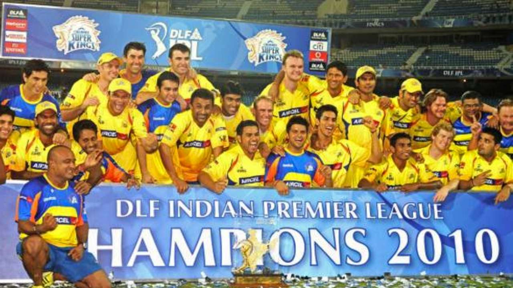
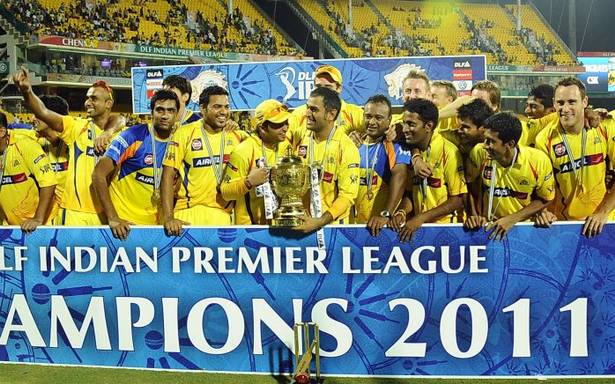
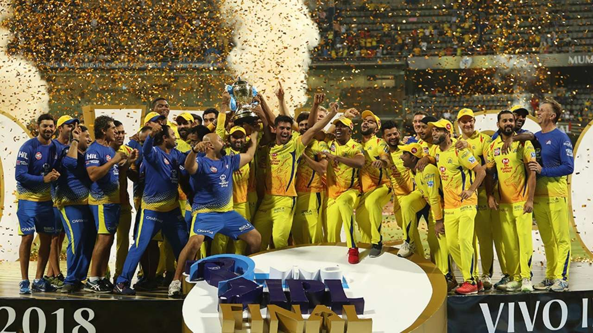

BIO
(wikipedia)
The Chennai Super Kings (CSK) are a franchise cricket team based in Chennai, Tamil Nadu, which plays in the Indian
Premier League (IPL). Founded in 2008, the team plays its home matches at the M. A. Chidambaram Stadium in Chennai. The
team served a two-year suspension from the IPL starting July 2015 for the alleged involvement of their owners in the
2013 IPL betting case,and won the title in its comeback season. The team is captained by Mahendra Singh Dhoni and
coached by Stephen Fleming.
The Super Kings have lifted the IPL title thrice (in 2010, 2011 and 2018), and has the highest win percentage among all
teams in the IPL (61.28).They hold the records of most appearances in the playoffs (ten) and the Final (eight) of
the IPL. They are the only IPL team to qualify for the playoff stage in each edition of their appearance in the league.
In addition, they have also won the Champions League Twenty20 in 2010 and 2014. The brand value of the Super Kings in
2019 is estimated to be around ₹732 crore (roughly $104 million), making them the second-most valuable IPL franchise,
after Mumbai Indians.